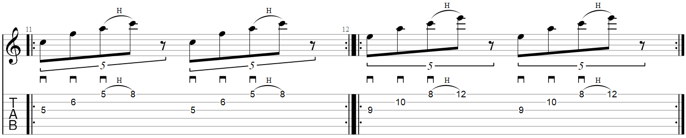
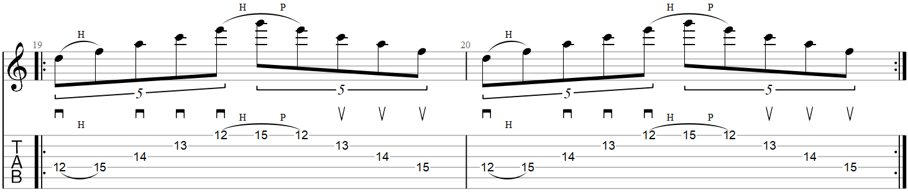
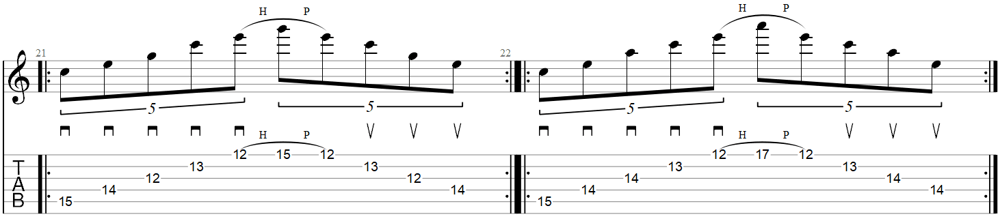
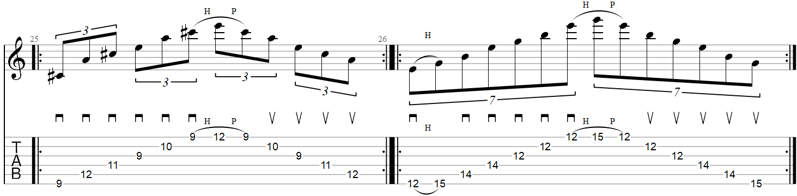

Tabs Sweep picking
Estos tabs te ayudaran en avanzar y mejorar tu lenguaje con el instrumento , te aconsejo ir del primero al ultimo en orden
Consejo; Utiliza metronomo para los jercicios , el oido puede llevar el compas erroneo y tu no lo sabes al principio
1°Tab
2°Tab

3°Tab
4°Tab
5°Tab
